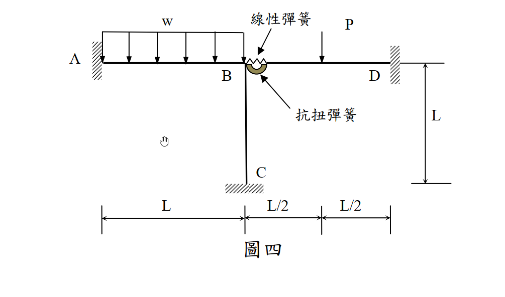
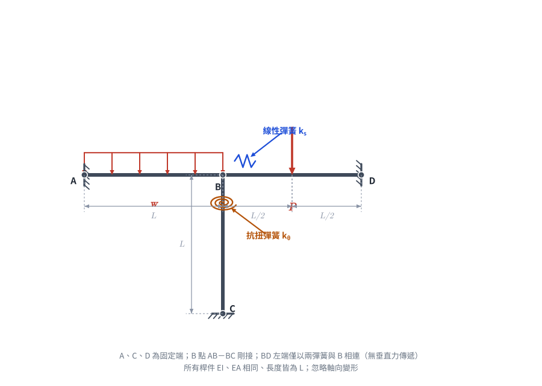
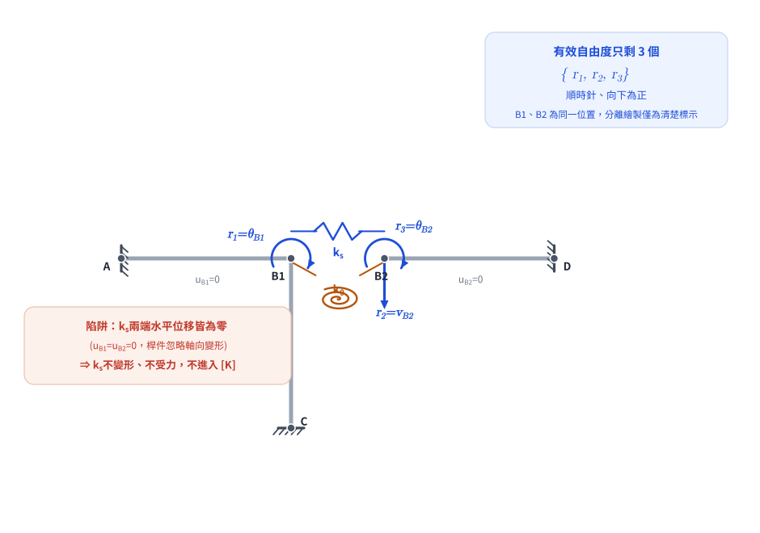

考題編號：SA-2015-4
主分類： SA-U2-4 靜不定結構之矩陣分析法
副分類： 無
分析法： 直接勁度法 (Direct Stiffness Method)
標籤： 矩陣位移法 彈簧接頭 自由度判定 固端彎矩 無軸向變形
1. 原始題目
一平面構架承受載重如圖四所示，點 A、C 及 D 為固定支承，桿件 AB 與 BC 在 B 點為剛接，與桿件 BD 的接合是以一抗扭彈簧及一水平線性彈簧來連結，分別模擬彎矩及水平力的傳遞，但無垂直力傳遞。抗扭彈簧及線性彈簧的力與位移關係皆為線彈性。設桿件 AB、BC 與 BD 之 EI 及 EA 都為定值，桿長皆為 L，且忽略其軸向變形，抗扭彈簧及線性彈簧之彈簧常數分別為 $k_\theta$ 和 $k_s$。試標示此結構之位移自由度（完全束制之位移自由度不計），然後求對應這些自由度之勁度矩陣 $[K]$ 及外力矩陣 $[R]$。（$[R]=[K][r]$，$[r]$ 為位移矩陣）（25 分）

圖說：構架 A-B-C-D。A、C、D為固定端。AB(長L)受向下均佈載重w，BC(長L)為直柱，BD(長L)於中央受向下集中力P。B節點處，AB與BC剛接，並透過抗扭彈簧與水平線性彈簧連接BD桿左端。

圖 1 題目重繪（向量版），把彈簧接頭型式（線性彈簧 $k_s$／抗扭彈簧 $k_\theta$）與各段跨距 $L$、$L/2$、$L/2$ 釘死。這張圖攔的是把彈簧接頭誤看成剛接或鉸接，或跨距標錯，導致邊界條件與後續 FEM 全盤皆錯。
2. 核心考點
本題旨在測驗考生對於直接勁度法中「系統自由度 (DOF)」的精準判定，以及包含彈簧元件的勁度矩陣組裝。
最大陷阱在於：題目給定了水平線性彈簧 $k_s$，但同時又宣告「忽略桿件軸向變形」。考生必須具備清晰的物理觀念，判斷出 $k_s$ 兩端的水平位移其實皆為零，進而將其從獨立自由度中排除，而非盲目列入矩陣。
3. 解題戰略地圖
- 節點運動學分析與自由度判定：
- 將 B 點拆分為「左側節點 (AB-BC 剛接體)」與「右側節點 (BD 桿左端)」。
- 根據邊界條件 (A、C、D 固定) 與「忽略軸向變形」的假設，逐一檢驗每個位移分量。
- 標示出真正獨立、非零的未知自由度矩陣 $[r]$。 - 勁度矩陣 $[K]$ 推導：
- 依序對每個自由度施加單位位移 ($r_i = 1$)，其餘保持為零。
- 計算維持此變形狀態所需的對應外力，即為勁度係數 $K_{ji}$。
- 組合樑的彎曲勁度 (如 $4EI/L$, $6EI/L^2$, $12EI/L^3$) 與彈簧勁度。 - 等效節點外力矩陣 $[R]$ 推導：
- $[R] = [P] - [FEM]$ (節點直接外力 - 固端反力)。
- 將桿件上的載重 $w$ 與 $P$ 轉換為對應於各自由度的固端力。
- 依照自由度的正負號慣例，求出最終的 $[R]$。
3.5 變數層次分析 (Variable Hierarchy Analysis)
最終目標
確立位移矩陣 $[r]$，推導 $[K]$ 與 $[R]$。
L1：題目給定條件
- 支承：A、C、D 完全固定 ($u=v=\theta=0$)。
- 桿件特性：$EA, EI$ 為常數，長度皆為 $L$。忽略軸向變形 ($EA \to \infty$)。
- 彈簧：抗扭彈簧 $k_\theta$、水平線性彈簧 $k_s$。
- 特殊接合：BD 左端「無垂直力傳遞」，表示其垂直位移與 AB-BC 獨立。
- 載重：AB 桿受均佈向下 $w$；BD 桿中點受集中向下 $P$。
L2：自由度判定 (卡關陷阱區 ⚠)
| 潛在位移分量 | 幾何拘束分析 | 結論 |
|---|---|---|
| AB-BC 之 $u$ | A 固定，AB 無軸向變形 $\Rightarrow u_A = u_{B(left)} = 0$ | 束制 |
| AB-BC 之 $v$ | C 固定，BC 無軸向變形 $\Rightarrow v_C = v_{B(left)} = 0$ | 束制 |
| AB-BC 之 $\theta$ | A、C 固定，但 B 端可自由轉動 | $r_1$ (自由) |
| BD 左端 之 $u$ | D 固定，BD 無軸向變形 $\Rightarrow u_D = u_{B(right)} = 0$ | 束制 |
| BD 左端 之 $v$ | 無垂直力傳遞，且 D 點固定不影響左端剪切變形 | $r_2$ (自由) |
| BD 左端 之 $\theta$ | 右端固定，左端無剛接束制，可受彈簧帶動旋轉 | $r_3$ (自由) |
⚠ 陷阱解析： 因 $u_{B(left)} = 0$ 且 $u_{B(right)} = 0$，水平線性彈簧 $k_s$ 兩端皆無位移，故不變形、無內力，與本題解答矩陣完全無關。

圖 2 自由度辨識（B1、B2 為同一位置，分離繪製僅為清楚標示）。有效自由度只剩 $r_1=\theta_{B1}$、$r_2=v_{B2}$、$r_3=\theta_{B2}$ 三個。這張圖攔的正是上方陷阱：誤把 $k_s$ 對應的水平位移列為第 4 個自由度，或漏乘 $k_s$ 卻沒發現它其實不出現在 $[K]$ 中。
4. 步驟化詳細計算過程
步驟 1：定義位移自由度矩陣 $[r]$
為了方便建立符號慣例，定義以下三個獨立自由度（完全束制者不計）：
- $r_1 = \theta_{B1}$：AB-BC 剛接節點之旋轉角（定義順時針為正）。
- $r_2 = v_{B2}$：BD 桿左端之垂直位移（定義向下為正）。
- $r_3 = \theta_{B2}$：BD 桿左端之旋轉角（定義順時針為正）。
$$ [r] = \begin{bmatrix} r_1 \\ r_2 \\ r_3 \end{bmatrix} $$
步驟 2：推導勁度矩陣 $[K]$
1. 令 $r_1 = 1$, $r_2 = r_3 = 0$
- 節點 1 (AB-BC) 順時針旋轉 1 單位。
- 桿件 AB (遠端 A 固定)：產生端彎矩 $M_{BA} = \frac{4EI}{L}$。
- 桿件 BC (遠端 C 固定)：產生端彎矩 $M_{BC} = \frac{4EI}{L}$。
- 抗扭彈簧：一端旋轉 1，另一端為 0。產生抵抗力矩 $k_\theta$ 作用於節點 1，同時將 $-k_\theta$ 傳遞至節點 2。
- 節點 2 無垂直位移傾向，故 $K_{21} = 0$。
$$ \Rightarrow K_{11} = \frac{4EI}{L} + \frac{4EI}{L} + k_\theta = \frac{8EI}{L} + k_\theta $$
$$ \Rightarrow K_{21} = 0 $$
$$ \Rightarrow K_{31} = -k_\theta $$
2. 令 $r_2 = 1$ (向下), $r_1 = r_3 = 0$
- 節點 2 (BD 左端) 向下位移 1 單位，不旋轉。節點 1 無動作。
- 桿件 BD (遠端 D 固定)：左端產生純下陷。
- 維持此位移所需的向下剪力：$V_{BD} = \frac{12EI}{L^3}$。
- 為阻止其旋轉，所需的固端彎矩 (順時針)：$M_{BD} = \frac{6EI}{L^2}$。
- 彈簧皆無動作。
$$ \Rightarrow K_{12} = 0 $$
$$ \Rightarrow K_{22} = \frac{12EI}{L^3} $$
$$ \Rightarrow K_{32} = \frac{6EI}{L^2} $$
3. 令 $r_3 = 1$ (順時針), $r_1 = r_2 = 0$
- 節點 2 順時針旋轉 1 單位，無垂直位移。
- 桿件 BD：
- 維持旋轉所需之端彎矩：$M_{BD} = \frac{4EI}{L}$。
- 伴隨產生之向上剪力反力為 $\frac{6EI}{L^2}$，故需施加向下之外力 $\frac{6EI}{L^2}$。
- 抗扭彈簧：節點 2 旋轉 1 單位，產生 $k_\theta$ 自身抵抗，並傳遞 $-k_\theta$ 至節點 1。
$$ \Rightarrow K_{13} = -k_\theta $$
$$ \Rightarrow K_{23} = \frac{6EI}{L^2} $$
$$ \Rightarrow K_{33} = \frac{4EI}{L} + k_\theta $$
組裝 $[K]$ 矩陣：
$$ [K] = \begin{bmatrix}
\frac{8EI}{L} + k_\theta & 0 & -k_\theta \\
0 & \frac{12EI}{L^3} & \frac{6EI}{L^2} \\
-k_\theta & \frac{6EI}{L^2} & \frac{4EI}{L} + k_\theta
\end{bmatrix} $$
步驟 3：推導等效節點外力矩陣 $[R]$
等效節點載重 $[R] = [P] - [FEM]$。
本結構無直接作用於自由度上的集中力矩或力量，故 $[P] = 0$。
1. 自由度 1 ($r_1$, 順時針彎矩)
- 桿件 AB 受向下均佈載重 $w$。
- B 端為固定端時之固端彎矩 $FEM_{BA} = \frac{wL^2}{12}$ (順時針，以抵抗負彎矩傾向)。
- $\Rightarrow R_1 = 0 - \left(+\frac{wL^2}{12}\right) = -\frac{wL^2}{12}$
(物理意義：AB 上的負載會使 B 節點產生逆時針旋轉的趨勢)
2. 自由度 2 ($r_2$, 向下力量)
- 桿件 BD 受中央向下集中力 $P$。
- 左端 B 之固端剪力反力為向上 $\frac{P}{2}$。因 $r_2$ 定義向下為正，故 $FEM_2 = -\frac{P}{2}$。
- $\Rightarrow R_2 = 0 - \left(-\frac{P}{2}\right) = \frac{P}{2}$
(物理意義：BD 上的向下負載會使 B 節點產生向下位移的趨勢)
3. 自由度 3 ($r_3$, 順時針彎矩)
- 桿件 BD 受中央向下集中力 $P$。
- 左端 B 之固端彎矩為逆時針 $\frac{PL}{8}$。因 $r_3$ 定義順時針為正，故 $FEM_3 = -\frac{PL}{8}$。
- $\Rightarrow R_3 = 0 - \left(-\frac{PL}{8}\right) = \frac{PL}{8}$
(物理意義：BD 中央的負載會使左端產生順時針旋轉的趨勢)
組裝 $[R]$ 矩陣：
$$ [R] = \begin{bmatrix}
-\frac{wL^2}{12} \\
\frac{P}{2} \\
\frac{PL}{8}
\end{bmatrix} $$
5. 結論與最終答案
定義位移矩陣 $[r] = \begin{bmatrix} \theta_{B1} \\ v_{B2} \\ \theta_{B2} \end{bmatrix}$ (各以順時針、向下為正)
勁度矩陣：
$$ [K] = \begin{bmatrix}
\frac{8EI}{L} + k_\theta & 0 & -k_\theta \\
0 & \frac{12EI}{L^3} & \frac{6EI}{L^2} \\
-k_\theta & \frac{6EI}{L^2} & \frac{4EI}{L} + k_\theta
\end{bmatrix} $$
外力矩陣：
$$ [R] = \begin{bmatrix}
-\frac{wL^2}{12} \\
\frac{P}{2} \\
\frac{PL}{8}
\end{bmatrix} $$
(註：若學生自定義之自由度方向與本解相反，矩陣內元素正負號會依循對應邏輯改變，但矩陣主對角線元素恆正。)
圖解補繪：2026-08-27（向量圖，腳本 gen_SA-2015-4.py，可重跑）